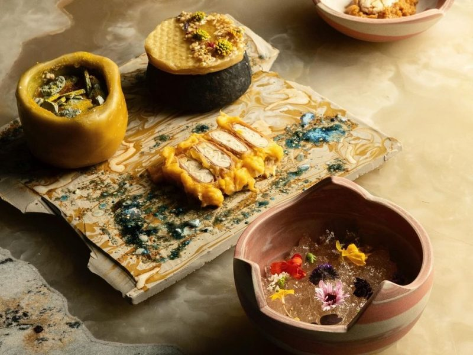
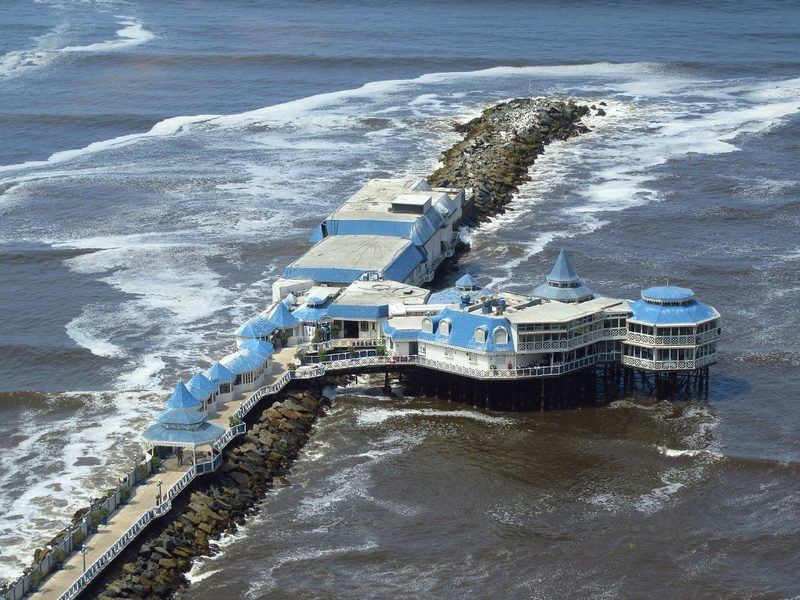
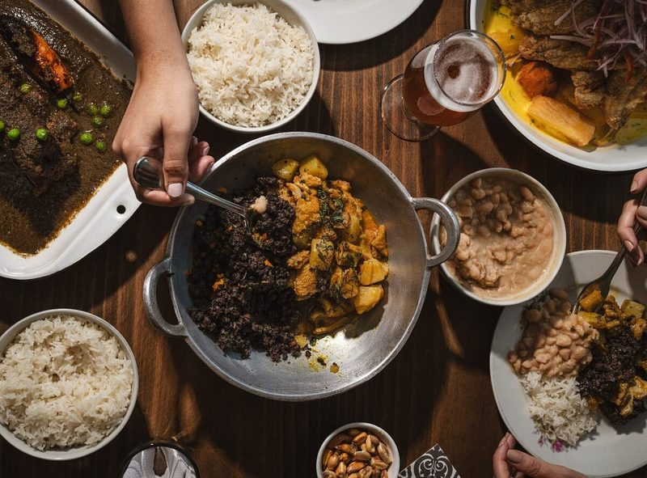
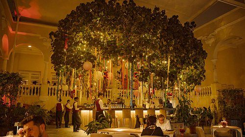
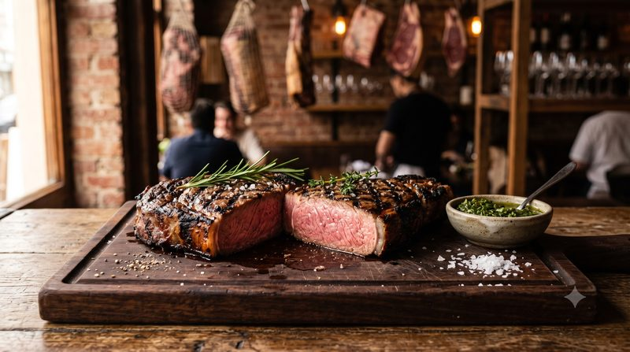
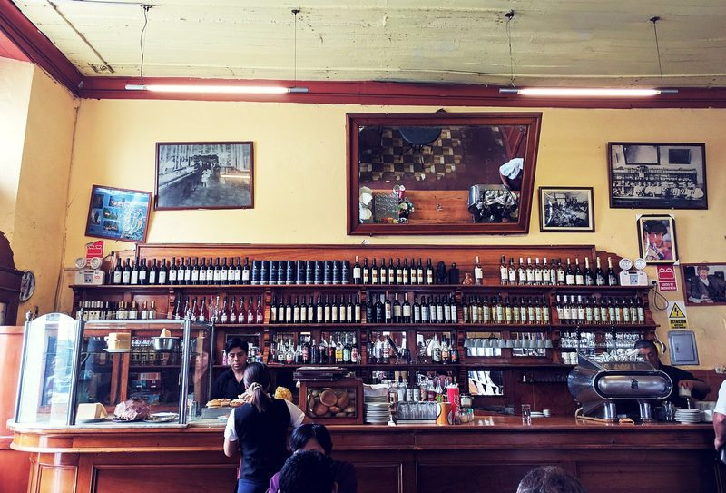
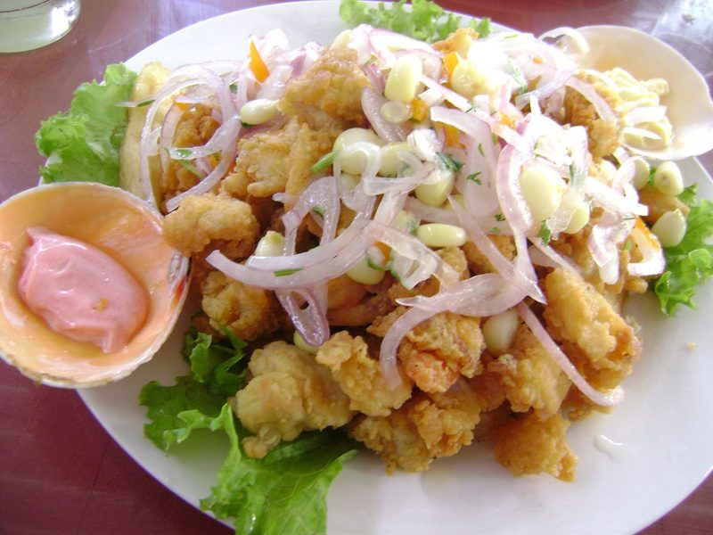

Barranco · Contemporánea
Central
Menú de degustación del chef Virgilio Martínez que recorre los ecosistemas y las altitudes del Perú.
Sabores de Lima · Gastronomía
Explora sabores peruanos y propuestas gastronómicas de distintos distritos.

Encuentra tu próximo plan
Un recorrido por los mejores sabores de la ciudad. Utiliza los filtros para encontrar tu próxima experiencia gastronómica.

Barranco · Contemporánea
Menú de degustación del chef Virgilio Martínez que recorre los ecosistemas y las altitudes del Perú.

Barranco · Criolla
Taberna criolla del chef José del Castillo, en Barranco: escabeche de bonito, caucau, tiradito y lomo saltado.

Miraflores · Nikkei
Cocina nikkei del chef Mitsuharu Tsumura (Micha) en Miraflores, con menú de degustación.
Miraflores · Italiana / peruana
Restaurante sobre un muelle en el mar de la Costa Verde, en Miraflores, con vista a las olas y cocina marina.

San Isidro · Peruana contemporánea
Cocina peruana contemporánea en Casa Moreyra, San Isidro, fundada por Gastón Acurio y Astrid Gutsche.

La Molina · Carnes
Nació como carnicería y hoy es restaurante de carnes: trabaja la carne y el fuego con distintos puntos de maduración.

Lima · Criolla
Bar restaurante de 1905 junto a la estación Desamparados y el Palacio de Gobierno; Patrimonio Cultural del Perú desde 1989.

Pueblo Libre · Criolla
Taberna de 1880 en una casona de Pueblo Libre, con cebiche, sánguches de jamón del país y cócteles de pisco.

Surquillo · Marina
Cevichería popular de Toshi Matsufuji en Surquillo, de local sencillo y platos de pescados y mariscos.